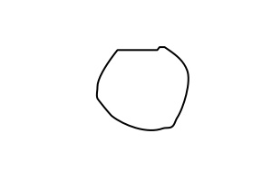
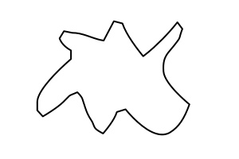
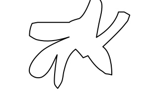

Per dare un senso a quello che dicevo, ho creato un framework per testare la bontà dei diversi indici di presenza di habitat di salamandre che si possono calcolare rimescolando le variae misure da prendere in campo (perimetro, diametro, numero delle concavità ecc.). Il framework è un semplice script R, lo stesso che ha prodotto questo breve report.
Per testare lo script ho disegnato il profilo di tre ceppaie afferenti a tre tipologie diverse per potenziale presenza di habitat (nessuno [Cerchio], qualche [Carpino], molti [Carpinoso] habitat):
  